New gas proposal
Worst-case-across-clients gas costs derived from the runtime fits, compared against the current Osaka cost table. Rendered from the generated proposal report; see the runtime and glue pages for the underlying per-fit detail.
Generated 2026-05-29 14:31:22Z · fork osaka · anchor_rate 100 Mgas/s
Summary: 18 parameters proposed — 15 increased, 3 decreased, 0 new, 0 unresolved · 0 warnings · 3 poor-fit selections
Proposed gas parameters
| Gas param | Current gas | Proposed gas | Diff | Diff % |
|---|---|---|---|---|
| OPCODE_DIV | 5 | 6 | +1 | +20% |
| OPCODE_SDIV | 5 | 7 | +2 | +40% |
| OPCODE_MOD | 5 | 8 | +3 | +60% |
| OPCODE_SMOD | 5 | 8 | +3 | +60% |
| OPCODE_ADDMOD | 8 | 11 | +3 | +38% |
| OPCODE_MULMOD | 8 | 16 | +8 | +100% |
| OPCODE_KECCAK256_BASE | 30 | 47 | +17 | +57% |
| OPCODE_KECCAK256_PER_WORD | 6 | 7 | +1 | +17% |
| PRECOMPILE_ECRECOVER | 3000 | 4267 | +1267 | +42% |
| PRECOMPILE_BLAKE2F_BASE | 0 | 124 | +124 | n/a |
| PRECOMPILE_BLAKE2F_PER_ROUND | 1 | 2 | +1 | +100% |
| PRECOMPILE_BLS_G1ADD | 375 | 404 | +29 | +8% |
| PRECOMPILE_BLS_G2ADD | 600 | 557 | -43 | -7% |
| PRECOMPILE_ECADD | 150 | 360 | +210 | +140% |
| PRECOMPILE_ECPAIRING_BASE | 45000 | 27331 | -17669 | -39% |
| PRECOMPILE_ECPAIRING_PER_POINT | 34000 | 19351 | -14649 | -43% |
| PRECOMPILE_POINT_EVALUATION | 50000 | 125622 | +75622 | +151% |
| PRECOMPILE_P256VERIFY | 6900 | 7258 | +358 | +5% |
Client comparison
Worst client vs. second-worst client per gas parameter. The Ratio column is worst gas / second-worst gas — values close to 1× mean the worst case sits next to the rest of the field, while large ratios flag the worst client as an outlier.
| Gas param | Worst client | Worst gas | Second-worst client | Second-worst gas | Ratio |
|---|---|---|---|---|---|
| OPCODE_DIV | geth | 6 | besu | 2 | 3.00× |
| OPCODE_SDIV | geth | 7 | besu | 2 | 3.50× |
| OPCODE_MOD | geth | 8 | besu | 2 | 4.00× |
| OPCODE_SMOD | geth | 8 | besu | 2 | 4.00× |
| OPCODE_ADDMOD | geth | 11 | besu | 3 | 3.67× |
| OPCODE_MULMOD | geth | 16 | besu | 4 | 4.00× |
| OPCODE_KECCAK256_BASE | geth | 47 | besu | 12 | 3.92× |
| OPCODE_KECCAK256_PER_WORD | geth | 7 | nethermind | 3 | 2.33× |
| PRECOMPILE_ECRECOVER | geth | 4267 | erigon | 868 | 4.92× |
| PRECOMPILE_BLAKE2F_BASE | besu | 124 | erigon | 94 | 1.32× |
| PRECOMPILE_BLAKE2F_PER_ROUND | geth | 2 | besu | 1 | 2.00× |
| PRECOMPILE_BLS_G1ADD | geth | 404 | besu | 233 | 1.73× |
| PRECOMPILE_BLS_G2ADD | geth | 557 | besu | 264 | 2.11× |
| PRECOMPILE_ECADD | geth | 360 | besu | 126 | 2.86× |
| PRECOMPILE_ECPAIRING_BASE | geth | 27331 | reth | 8184 | 3.34× |
| PRECOMPILE_ECPAIRING_PER_POINT | geth | 19351 | nethermind | 11439 | 1.69× |
| PRECOMPILE_POINT_EVALUATION | geth | 125622 | besu | 21828 | 5.76× |
| PRECOMPILE_P256VERIFY | geth | 7258 | erigon | 1385 | 5.24× |
Per-client proposed gas for each parameter. Cells are colored by log2(proposed / current) — red means the proposal is more expensive than the current gas cost, green means cheaper, and white sits at unchanged. Annotations show the absolute proposed gas value; blank rows are parameters with no prior baseline (see warnings below).
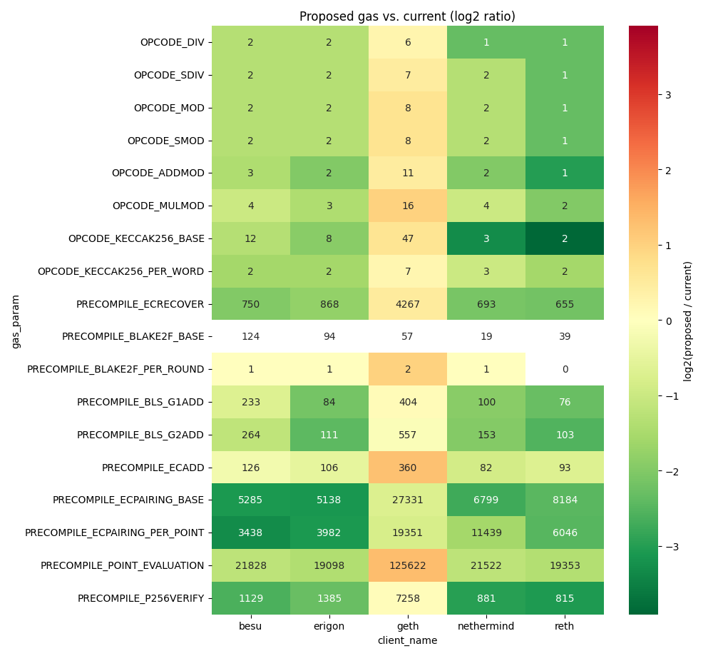
Worst-case provenance per gas param
One collapsible block per gas parameter showing every per-client candidate that the worst-case selector saw. Rows are model combos (the source regression's test_name, target_opcode, model_coef_name, and any model_by factors — components constant within a parameter are dropped from the label). Cells carry each candidate's proposed gas; the cell the per-client selector picked is outlined in black. Colors are log2(proposed / current) against that parameter's baseline on a per-parameter symmetric scale.
Single-combo parameters omitted (see proposal table for the sole estimation): OPCODE_DIV, OPCODE_SDIV, OPCODE_ADDMOD, OPCODE_MULMOD, PRECOMPILE_ECRECOVER, PRECOMPILE_BLS_G1ADD, PRECOMPILE_BLS_G2ADD.
OPCODE_MOD — 4 combos × 5 clients
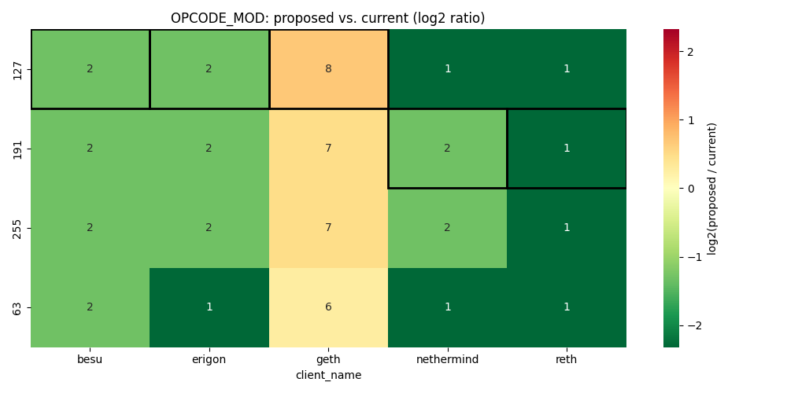
OPCODE_SMOD — 4 combos × 5 clients
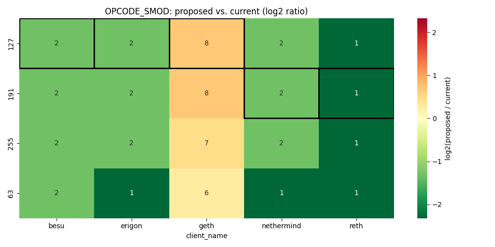
OPCODE_KECCAK256_BASE — 4 combos × 5 clients
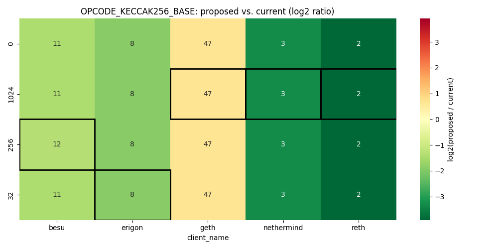
OPCODE_KECCAK256_PER_WORD — 4 combos × 5 clients
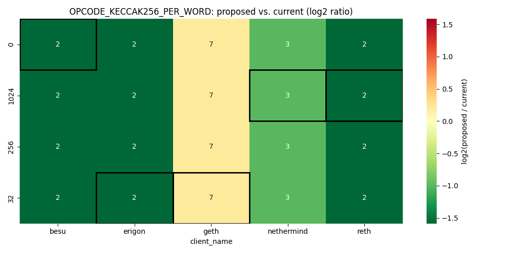
PRECOMPILE_BLAKE2F_BASE — 2 combos × 5 clients
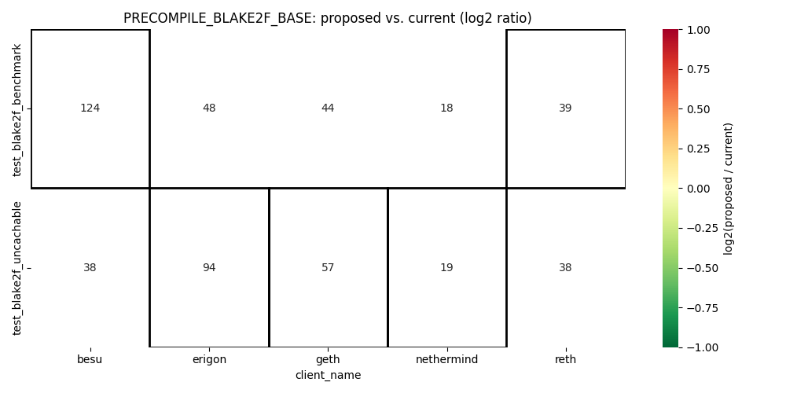
PRECOMPILE_BLAKE2F_PER_ROUND — 2 combos × 5 clients
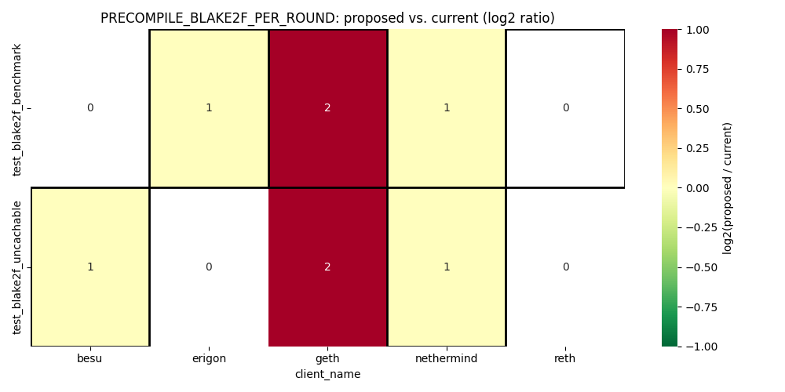
PRECOMPILE_ECADD — 5 combos × 5 clients
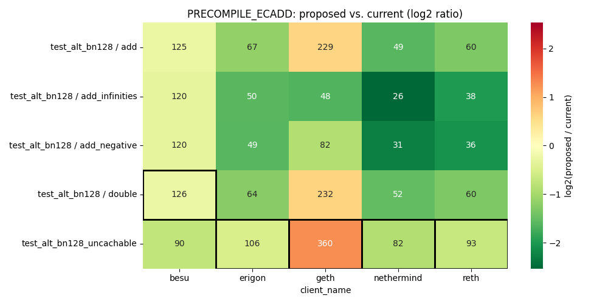
PRECOMPILE_ECPAIRING_BASE — 2 combos × 5 clients
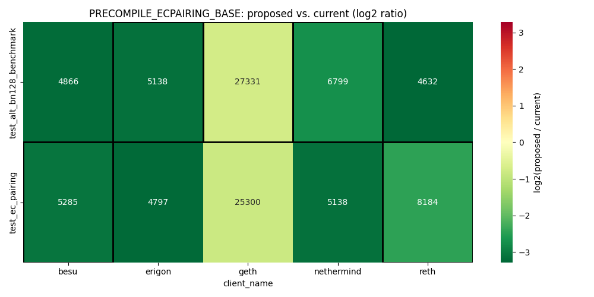
PRECOMPILE_ECPAIRING_PER_POINT — 2 combos × 5 clients
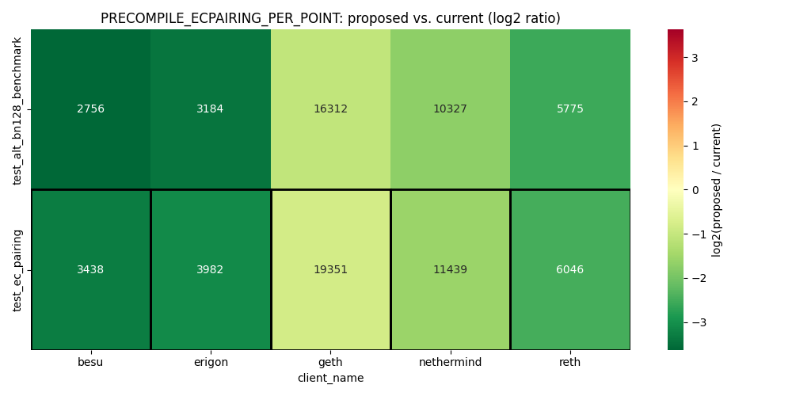
PRECOMPILE_POINT_EVALUATION — 2 combos × 5 clients
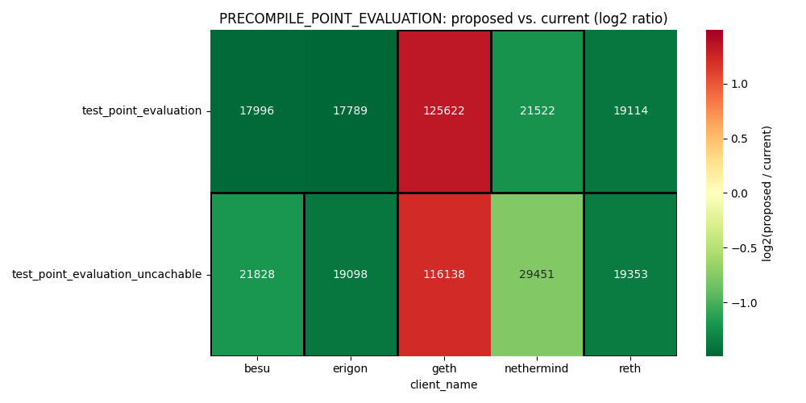
PRECOMPILE_P256VERIFY — 2 combos × 5 clients
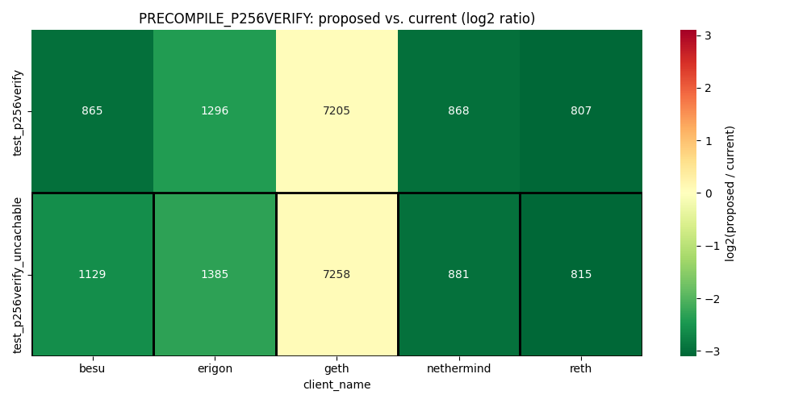
Warnings
Missing parameters
None.
Incomplete client coverage
None.
Missing glue adjustments
Priced glue opcodes with a poor fit — 31 (glue_opcode, client) fits skipped
p_value >= glue_contribution_p_value_threshold (0.05) or rsquared < glue_contribution_rsquared_threshold (0.5) — the contribution of these (glue_opcode, client) fits was skipped when computing the glue adjustment, so the listed gas params carry a target coefficient that is not net of this glue opcode's runtime on the affected clients. See glue_opcodes_autogenerated_report.md for per-fit metrics.
| Glue opcode | Affected clients | Affected gas params |
|---|---|---|
CALLDATACOPY |
nethermind (R²) |
PRECOMPILE_POINT_EVALUATION |
CALLDATALOAD |
besu (R²), erigon (R²), geth (R²), nethermind (both), reth (R²) |
OPCODE_ADDMOD, OPCODE_MOD, OPCODE_MULMOD, OPCODE_SMOD |
DUP |
nethermind (p-value) |
OPCODE_ADDMOD, OPCODE_DIV, OPCODE_MOD, OPCODE_MULMOD, OPCODE_SDIV, OPCODE_SMOD |
EXP |
erigon (R²), nethermind (both) |
— |
GAS |
nethermind (p-value) |
PRECOMPILE_BLAKE2F_BASE, PRECOMPILE_BLS_G1ADD, PRECOMPILE_BLS_G2ADD, PRECOMPILE_ECADD, PRECOMPILE_ECPAIRING_BASE, PRECOMPILE_ECRECOVER, PRECOMPILE_P256VERIFY, PRECOMPILE_POINT_EVALUATION |
GT |
erigon (R²), nethermind (R²) |
PRECOMPILE_BLAKE2F_BASE, PRECOMPILE_ECADD, PRECOMPILE_ECPAIRING_BASE, PRECOMPILE_P256VERIFY, PRECOMPILE_POINT_EVALUATION |
ISZERO |
nethermind (R²) |
— |
JUMP |
besu (R²) |
OPCODE_ADDMOD, OPCODE_MULMOD |
JUMPDEST |
besu (R²) |
OPCODE_ADDMOD, OPCODE_MULMOD, PRECOMPILE_BLAKE2F_BASE, PRECOMPILE_ECADD, PRECOMPILE_ECPAIRING_BASE, PRECOMPILE_ECRECOVER, PRECOMPILE_P256VERIFY, PRECOMPILE_POINT_EVALUATION |
JUMPI |
erigon (both) |
PRECOMPILE_BLAKE2F_BASE, PRECOMPILE_ECADD, PRECOMPILE_ECPAIRING_BASE, PRECOMPILE_P256VERIFY, PRECOMPILE_POINT_EVALUATION |
KECCAK256 |
besu (R²), erigon (R²), geth (R²), nethermind (both), reth (both) |
— |
LT |
nethermind (R²) |
— |
MSTORE |
nethermind (R²), reth (R²) |
OPCODE_KECCAK256_BASE, PRECOMPILE_ECPAIRING_BASE, PRECOMPILE_ECRECOVER, PRECOMPILE_P256VERIFY, PRECOMPILE_POINT_EVALUATION |
MSTORE8 |
nethermind (R²) |
— |
PUSH0 |
nethermind (p-value) |
OPCODE_KECCAK256_BASE |
SELFBALANCE |
besu (R²), erigon (both) |
— |
STATICCALL |
geth (p-value) |
— |
SWAP |
erigon (R²), reth (R²) |
— |
Poor-fit selections
Rows where the winning fit's p-value exceeded modeling.poor_fit_p_value_threshold (0.05) or its R² fell below modeling.poor_fit_rsquared_threshold (0.5). The failing threshold(s) are noted alongside each row; selections in ### Winners with poor fit still drive the proposal, while ### Other weak candidates lists losing candidates that the selector dropped in favor of a qualified alternative. See runtime_estimation_autogenerated_report.md for per-fit runtime_ms, pvalue, and rsquared metrics.
Winners with poor fit
| Gas param | Client | Test | Target opcode | Coef | runtime_ms | pvalue | rsquared | Failed |
|---|---|---|---|---|---|---|---|---|
PRECOMPILE_BLAKE2F_PER_ROUND |
erigon |
test_blake2f_benchmark |
BLAKE2F |
num_rounds |
4.094e-07 | 0.261 | 0.8339 | p-value |
PRECOMPILE_BLAKE2F_PER_ROUND |
reth |
test_blake2f_benchmark |
BLAKE2F |
num_rounds |
0 | 1 | 0.988 | p-value |
PRECOMPILE_BLS_G1ADD |
erigon |
test_bls12_381 |
BLS12_G1ADD |
target_coef |
0.0008364 | 0.001 | 0.4836 | R² |
Other weak candidates
OPCODE_SMOD — 1 weak combo
| Test | Target opcode | Coef | Combo | Failing clients |
|---|---|---|---|---|
test_mod |
SMOD |
target_coef |
— | erigon (R²) |
PRECOMPILE_BLAKE2F_PER_ROUND — 2 weak combos
| Test | Target opcode | Coef | Combo | Failing clients |
|---|---|---|---|---|
test_blake2f_benchmark |
BLAKE2F |
num_rounds |
— | besu (p-value) |
test_blake2f_uncachable |
BLAKE2F |
num_rounds |
— | erigon (p-value), reth (p-value) |
PRECOMPILE_POINT_EVALUATION — 1 weak combo
| Test | Target opcode | Coef | Combo | Failing clients |
|---|---|---|---|---|
test_point_evaluation_uncachable |
POINT_EVALUATION |
target_coef |
— | nethermind (R²) |